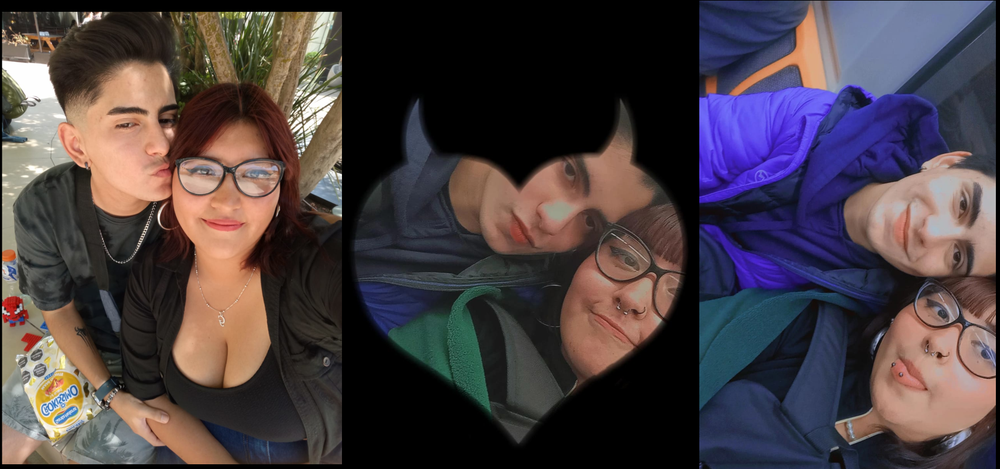

Hola mi amor,espero que te encuentres bien. ya han pasado 3 meses desde que me hiciste tu pareja. La verdad no puedo describir con palabras lo feliz que me haces todos los dias. Trato de entender que fue lo que hice para merecer a una polola tan dedicada como tu. Haz sido mi persona favorita y sinceramente dudo que lo dejes de hacer. Haz estado para mi cuando me sentia mal y eso ah tenido un valor inmenso para mi.Se que ahora la vida esta siendo un poco ruda contigo, pero recuerda que siempre tendre los brazos abiertos para cuando me necesites, asi como tu siempre los has tenido para mi.
Te extraño mi amor. solo cuento los segundos para poder volver a abrazarte, llenarte de besitos y recordarte que amar es una eleccion y yo eligo amarte todos los dias

Te amo mi princesa <3